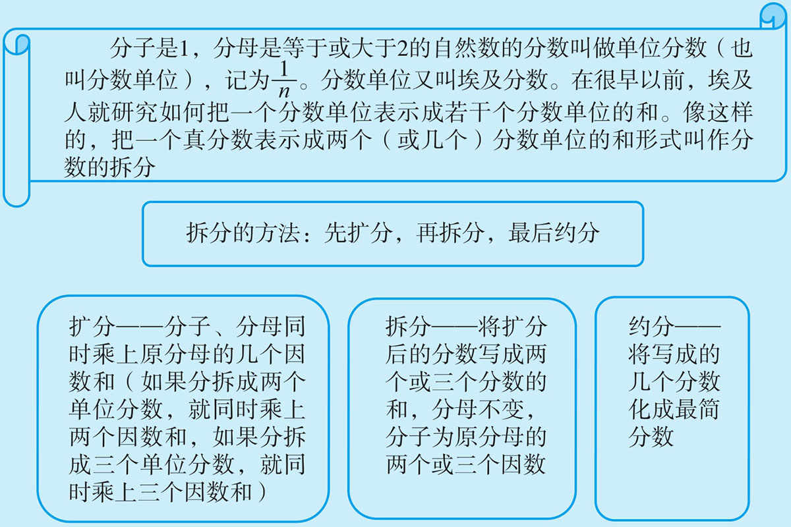
任何一个单位分数
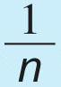
，都可以写成：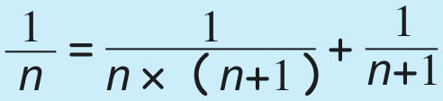
。例1 在
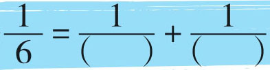
的括号里填入不同的自然数，使等式成立。把
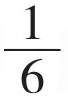
拆分成两个单位分数的和，要先“扩分”，扩分时找6的因数（1，2，3，6），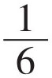
的分子分母同时乘上两个因数的和（1+2，1+3，1+6，2+3，2+6，3+6），一般乘两个互质因数的和；扩分后，再拆分成两个分数的和，如：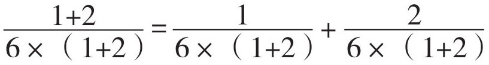
；最后约分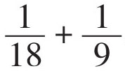
。同理，扩分时也可以乘其他两个因数的和，再拆分与约分。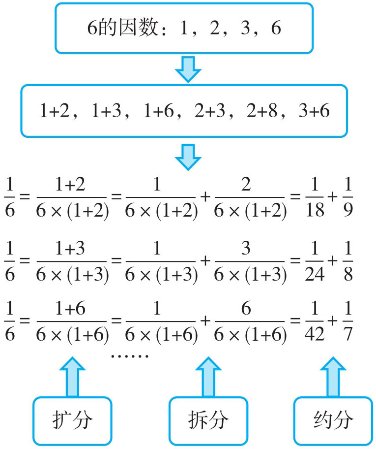
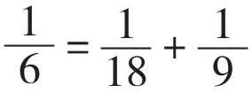
（答案不唯一）例2 在
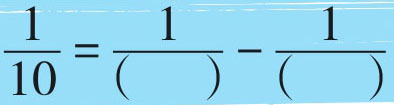
的括号里填入不同的自然数，使等式成立。把
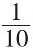
拆分成两个单位分数的差，它与拆分成两个单位分数的和方法一样，都是先找出10的因数，再扩分、拆分与约分。10的因数有：1，2，5，10。扩分时分子分母同时可乘（5-2），（10-2），（10-1），（10-5）等。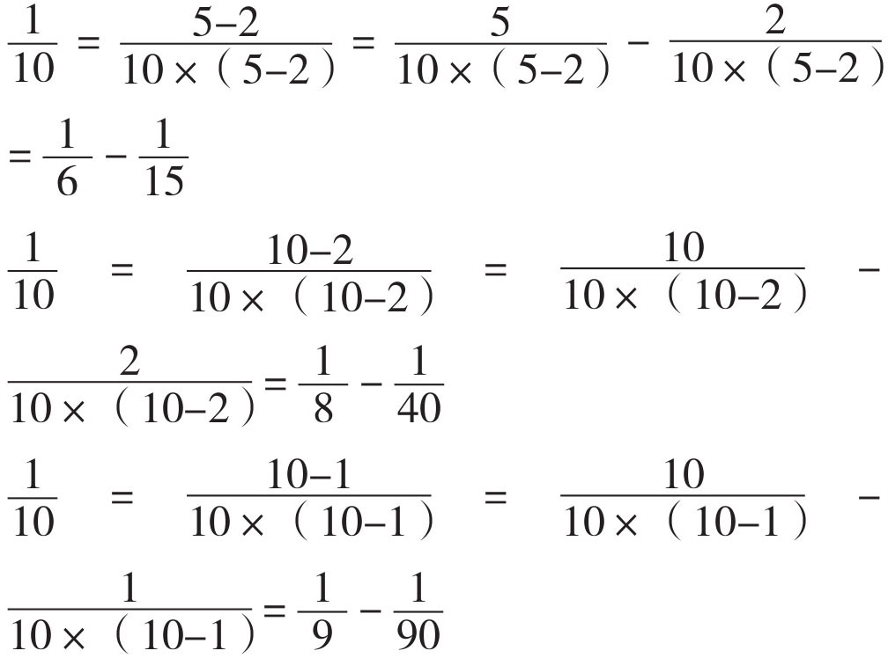
……
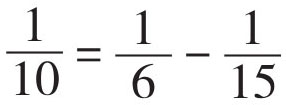
（答案不唯一）例3 如果将
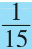
表示成三个不同的分数单位的和，那么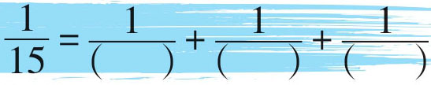
。把
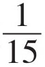
分拆成三个单位分数的和，它的方法与分拆成两个单位分数的和的方法同理，都是在15的因数（1，3，5，15）中找三个因数的和（1+3+5，3+5+15，1+5+15）进行扩分，扩分后再拆分，最后约分。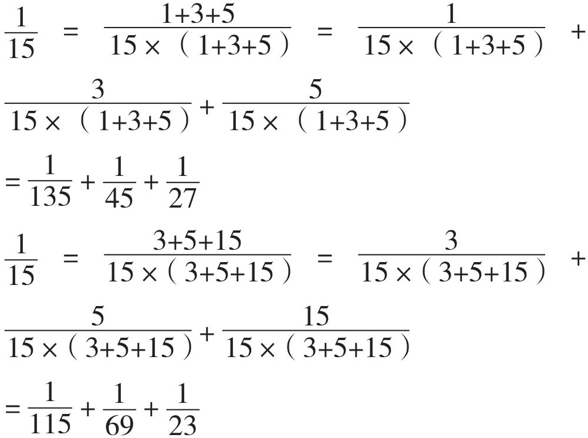
同学们还可以用（1+5+15）进行扩分尝试。
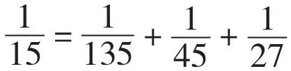
（答案不唯一）例4 在
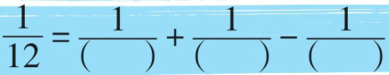
的括号里填上合适的自然数，使等式成立。把
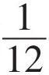
分拆成几个单位分数相加减，步骤也是先扩分，再分拆，最后约分。先找12的因数（1，2，3，4，6，12），选出三个因数相加减（2+3-1，3+4-2，4+6-3，3+6-3，…），利用每组中的三个因数进行扩分。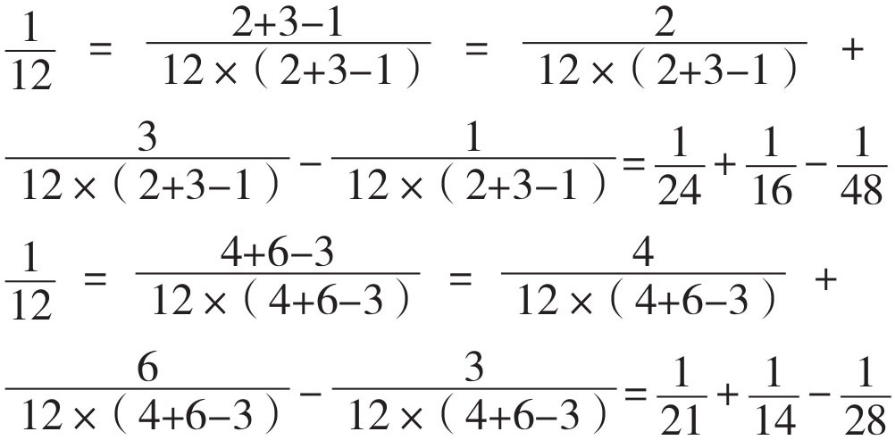
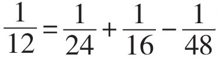
（答案不唯一）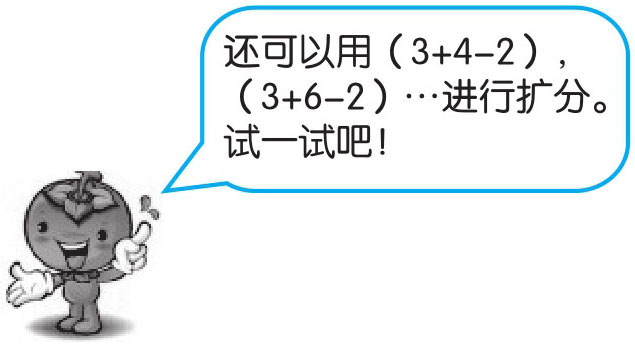
例5 计算
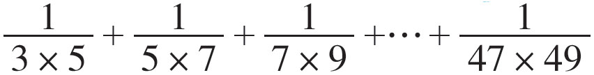
。题中每一个分数的分母都是由两个相邻奇数组成的，可以把它们拆分成两个单位分数的差乘
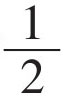
，如：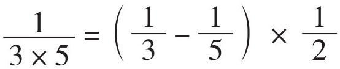
，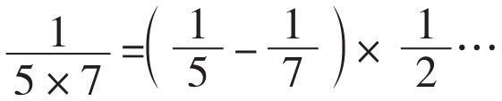
。根据乘法分配律，变式为单位分数的交替减与加，再乘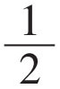
，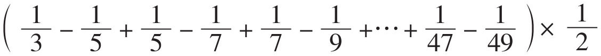
，经过分母相同的两个单位分数相互抵消，得到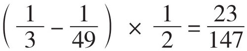
。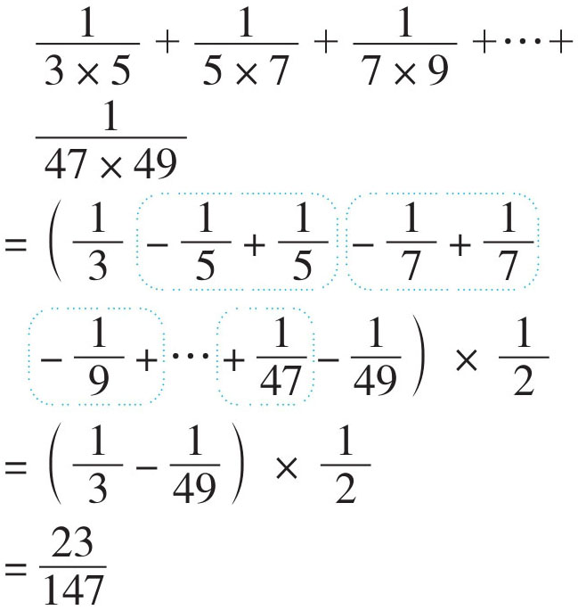
1．
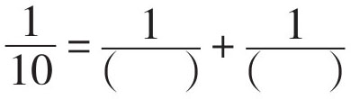
（括号里填不同的自然数）2．
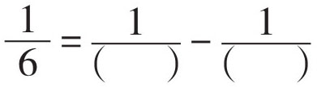
（括号里填不同的自然数）3．
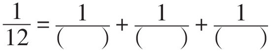
（括号里填不同的自然数）4．
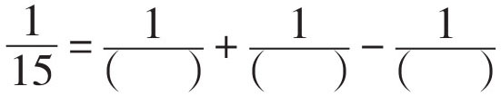
（括号里填不同的自然数）5．
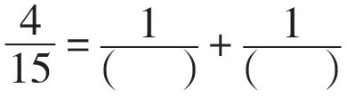
（选取的因数之和必须是4的倍数）6．
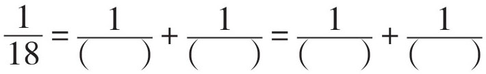
（括号里填不同的自然数）7．
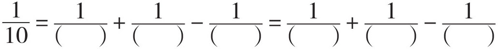
（括号里填不同的自然数）8．
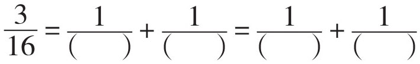
（括号里填不同的自然数）9．
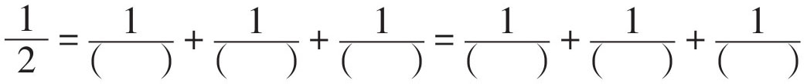
（提示：先把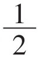
拆分成两个单位分数，再把其中一个单位分数进行拆分）